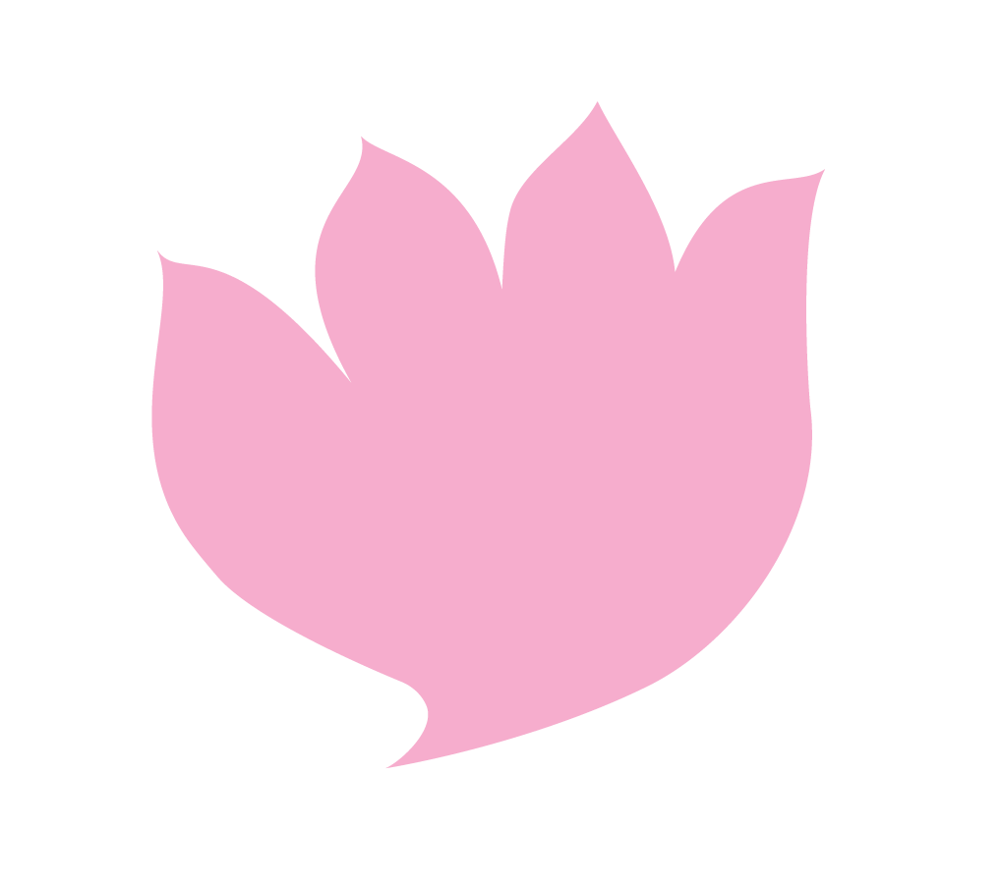

Mindfulness and mediation have been associated with several aspects of culture throughout the world and are deeply tied to Buddhist tradition. Mindfulness is a broad term used to describe a state of being, where a person is attentive to their experience in a present moment. Mediation is a more structured practice of disciplined and engaged awareness, but the two follow many of the same guideline. Mindfulness and meditation are core to spiritual applications, but have also expanded to include various activities in daily life. These can be proposed using three main pillars of understanding; equilibrium, awareness, and the body itself. Each of these ideas can be contextualized in its own respected histories. For the purpose of addressing a beginner’s orientation, meditative practice can be made accessibly universal and customizable, so long as there is acknowledgment of these core postulations.
In Western culture, many mindful practices have become monetized and commodified by mainstream culture. We see this in the array of yoga and fitness classes, monetized educational sources, and even subscription based meditation resources and publications. It is important to note that these practices are essentially free and can be accessed by any individual.

Equilibrium
The definition of “equilibrium” is essentially to maintain balance between multiple forces. The Thai Buddhist Monk, Achaan Chah, speaks on the concept as he states,
“do everything with a mind that lets go. If you let go a little you a will have a little peace. If you let go a lot you will have a lot of peace”
Although this sounds strict, it’s merely a prompt to better appreciate the ability to control our attachment to the way that things are. By “letting go” one is not neglecting their cravings and suffering, but instead paying attention to the entirety of what is happening, in big ways and small. The purpose of understanding equilibrium is to set up a home base for mindfulness or mediation practice. This way, someone who wants to partake in this kind of practice can gain a sense of security, which they can use to direct whatever might happen in the next moment. A popular manifestation of this idea is to focus, or redirect ones attention back to their breath, whenever the mind becomes too busy. Even this might be challenging for some, so it is necessary that we utilize gentle patience in our meditative practices.
Daily practice and benefits
There are several methods of introducing mindfulness and meditative practices into your life. Maybe you already have some! Daily practices can include mindfully making coffee or breakfast at the same time each morning. Quietly moving around the kitchen at the start of your day, you can bring extra awareness to this ritual and adopt it as a sinful practice.
Alternatively, many of us do some form of activity or exercise a few times a week. Even if for you this means taking a solo walk through the park, noticing the trees and the fullness of your surroundings. Being in these present moments will allow you to connect with your breath and begin to establish a mindful awareness. For some, physical activity looks like a long bike ride, 3km run, hike, or swim. All of these experiences are opportunities to put life’s troubles into perspective and quiet the mind.
Exercise specifically, similar to a creative headspace, can create an extremely meditative state of mind. As your body is working hard, the mind becomes focused on its own, sometimes bringing you to an almost trace-like state. Although this diverges from traditional meditation in form it is certainly a healthy and positive way to experience the sensations of meditation. Not to mention, meditation and mindfulness practices have numerous health benefits, which have been studied by practitioners and healthcare professionals. The nervous, digestive and immune systems have been evaluated as more resilient and efficient for those who practice regularly. Additionally, these practices are known to hugely benefit mental health and can be a supportive resource for those experiencing challenging times or prolonged mental health issues.
If you are seeking specific recommendations for trauma and/or medical related mindfulness and meditation practices, please speak to a healthcare professional.
“The natural quality of mind is clear, awake, alert, and knowing. Free from fixation. By training in being present, we come to know the nature of our mind. So the more you train in being present - being right here - the more you begin to feel like your mind is sharpening up. The mind that can come back to the present is clearer and more refreshed, and it can better weather all the ambiguities, pains, and paradoxes of life.” Pema Chödrön, How to Meditate